Portafolios de Inversión
Portafolio Eficiente: Optimización de la cartera de Markowitz

Contenido
Descripción
1. Introducción a la teoría de Markowitz
2. Supuestos de la teoría de Markowitz
3. Diversificación de la teoría de Markowitz
4. Fronteras eficientes
5. Data
6. Riesgo de cartera
7. Paqueterías a utilizar
8. Modelado
9. Rentabilidad logarítmica
10 Rendimiento esperado y volatilidades
11. Modelo de Markowitz
12. Participación por portafolio
1. Introducción a la teoría de Markowitz
2. Supuestos de la teoría de Markowitz
3. Diversificación de la teoría de Markowitz
4. Fronteras eficientes
5. Data
6. Riesgo de cartera
7. Paqueterías a utilizar
8. Modelado
9. Rentabilidad logarítmica
10 Rendimiento esperado y volatilidades
11. Modelo de Markowitz
12. Participación por portafolio
Descripción: En el siguiente entrenamiento se aplicará la teoría de portafolios eficientes para la elaboración de una cartera de inversión con seis valores bursátiles correspondientes a empresas pertenecientes a diferentes sectores económicos y registradas en el índice Standard and Poor 500 (S&P 500).
1. Introducción a la teoría de Markowitz
En 1952, un economista llamado Harry Markowitz escribió un artículo titulado “Portfolio Selection”, un documento que contenía teorías que transformaron el panorama de la gestión de cartera, páginas que le otorgarían el Premio Nobel de Economía casi cuatro décadas después.
Antagónica a las estrategias clásicas de inversión, su Teoría de Portafolio Moderna continúa siendo una estrategia de inversión utilizada por traders profesionales. Esta herramienta de gestión de cartera, si se usa correctamente, puede dar como resultado una cartera de inversión diversa y rentable.
La idea central de su teoría plantea que el inversor racional, buscará maximizar sus beneficios (retornos) asumiendo el menor riesgo (volatilidad) posible, esto se puede lograr con la diversificación de la cartera, eligiendo en principio, acciones que tengan una correlación baja o negativa. Por ejemplo, combinando acciones de empresas con distinta actividad económica.
La teoría de Markowitz también es conocida como análisis de varianza media, que se resume en: encontrar el mayor rendimiento en un determinado nivel de riesgo o el menor riesgo en un determinado nivel de rendimiento.
2. Supuestos de la teoría de Markowitz:
- Los inversores son racionales y se comportan de manera que maximicen su utilidad con un determinado nivel de ingresos o dinero.
- Los inversores tienen acceso gratuito a información justa y correcta sobre los rendimientos y el riesgo.
- Los mercados son eficientes y absorben la información de manera rápida y perfecta.
- Los inversores son reacios al riesgo y tratan de minimizar el riesgo y maximizar el rendimiento.
- Los inversores basan sus decisiones en los rendimientos esperados y la varianza o desviación estándar de estos rendimientos de la media.
- Los inversores eligen rendimientos más altos a rendimientos más bajos para un determinado nivel de riesgo.
Supuestos del modelo:
- Los retornos siguen una distribución normal.
- Una función de utilidad cuadrática representa las decisiones de los inversores.
3. Diversificación de la teoría de Markowitz :
Markowitz postuló que la diversificación no solo debe apuntar a reducir el riesgo de un valor reduciendo su variabilidad o desviación estándar, sino también reduciendo la covarianza o el riesgo interactivo de dos o más valores en una cartera. Como por combinación de diferentes valores, es teóricamente posible tener un rango de riesgo que varía de cero a infinito.
4. Frontera eficiente:
La frontera eficiente es el conjunto de carteras óptimas que ofrecen el rendimiento esperado más alto para un nivel de riesgo definido o el riesgo más bajo para un nivel dado de rendimiento esperado.
5. Data
Los seis activos bursátiles de la cartera forman parte del índice S&P 500, se seleccionó el período desde enero 2010 hasta abril 2020:Microsotf Corporation (MSFT): Importante compañía tecnológica multinacional con sede en Redmond, Washington, EE.UU, es la de mayor capitalización dentro del índice S&P 500.
Johnson & Johnson (JNJ): Histórico fabricante de dispositivos médicos, productos farmacéuticos, de cuidado personal, perfumes y artículos para bebés.
Mastercard Incorporated (MA): Una de las más importantes multinacionales de servicios financieros con sede en Purchase, Nueva York, Estados Unidos.
PepsiCo Inc (PEP): Exitosa empresa multinacional estadounidense dedicada a la fabricación, comercialización y distribución de bebidas y aperitivos.
Walmart Corporate (WMT): Corporación multinacional de tiendas de origen estadounidense, que opera cadenas de grandes almacenes de descuento y clubes de almacenes.
McDonald’s Corporation (MCD): Es una franquicia de restaurantes de servicio rápido estadounidense con sede en Illinois Chicago.
6. Riesgo de cartera y rendimiento esperado
El rendimiento esperado de la cartera se calcula como una suma ponderada de los rendimientos de los activos individuales. Para su cálculo se utiliza la siguiente fórmula:
\[Rep:\sum^{n}_{i=1}(Rep_{1}W_{1})+(Rep_{2}W_{2})+....(Rep_{6}W_{6})\]
Para calcular el riesgo de un portafolio se necesitan conocer antes dos medidas estadísticas: la covarianza y el coeficiente de correlación.
Covarianza
La covarianza es una medida de la relación entre dos variables aleatorias. La métrica evalúa cuánto, en qué medida, las variables cambian juntas. En otras palabras, es esencialmente una medida de la varianza entre dos variables. Sin embargo, la métrica no evalúa la dependencia entre variables. Su cálculo se realiza mediante la sumatoria de la diferencia entre las rentabilidades de cada uno de los activos (Ri) y su rentabilidad esperada (Re), multiplicados por la probabilidad de ocurrencia (p). \[COV=\sum^{n}_{i=1}(Ri_{x}-Re_{x})(Ri_{y}-Re_{y})(p)\]
Coeficiente de Correlación
La correlación mide la fuerza de la relación entre variables. La correlación es la medida a escala de la covarianza. Es adimensional. En otras palabras, el coeficiente de correlación siempre es un valor puro y no se mide en ninguna unidad.\[r=\frac{COV_{xy}}{\sigma_{x}\sigma_{y}}\]
Riesgo (Desviación estándar)
La variación de la cartera es un valor estadístico que evalúa el grado de dispersión de los rendimientos de una cartera. Es un concepto importante en la teoría moderna de la inversión. Aunque la medida estadística en sí misma puede no proporcionar información significativa, podemos calcular la desviación estándar de la cartera utilizando la varianza de la cartera.\[\sigma^{2}=\sum^{n}_{i=1}(W_{x}W_{y}COV_{(x,y)})\]
7. Paqueterías a utilizar:
Portfolio
Proporciona una colección de funciones para optimizar carteras y analizarlas desde diferentes puntos de vista.Tseries
Herramientas para análisis de series temporales y finanzas computacionales.8. Modelado
A continuación se armarán los datos de cada serie temporal utilizando la paquetería de portfolio y se graficarán.
Indice<- get.hist.quote(instrument = "^GSPC",
start=as.Date("2010-01-04"),
end=as.Date("2020-04-30"), quote = "AdjClose")## time series ends 2020-04-29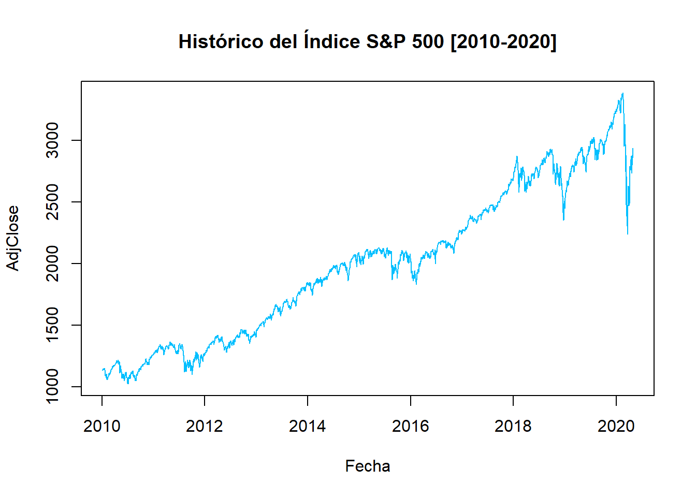
## Index Adjusted
## Min. :2010-01-04 Min. :1023
## 1st Qu.:2012-07-31 1st Qu.:1399
## Median :2015-03-03 Median :2003
## Mean :2015-03-01 Mean :1995
## 3rd Qu.:2017-09-27 3rd Qu.:2481
## Max. :2020-04-29 Max. :3386MSFT<- get.hist.quote(instrument = "MSFT",
start=as.Date("2010-01-04"),
end=as.Date("2020-04-30"), quote = "AdjClose")## time series ends 2020-04-29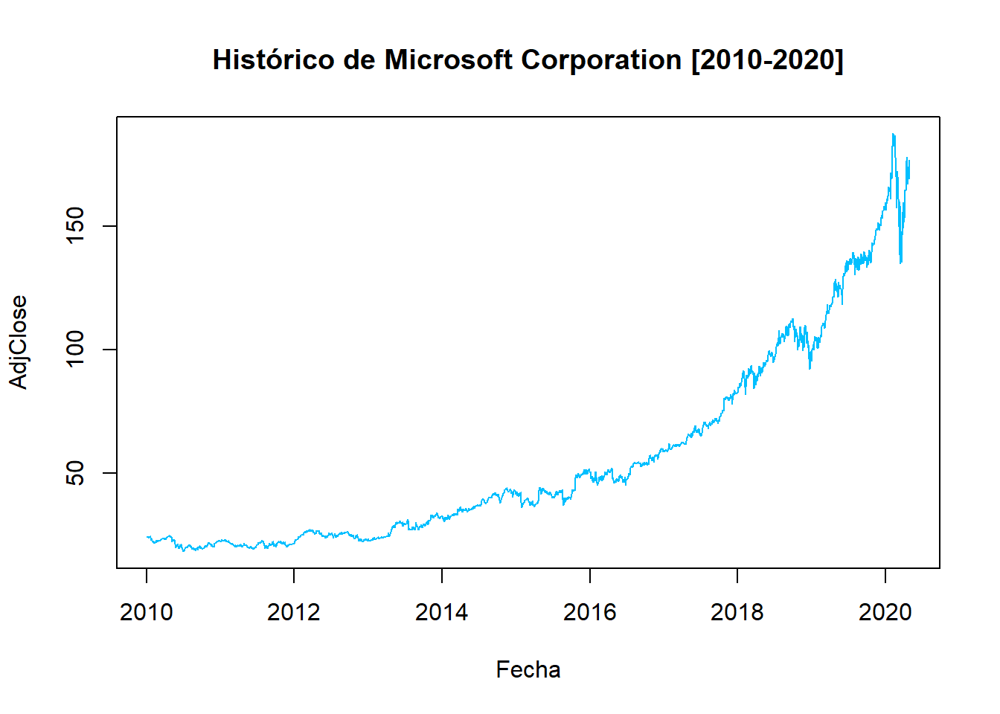
JNJ<- get.hist.quote(instrument = "JNJ",
start=as.Date("2010-01-04"),
end=as.Date("2020-04-30"), quote = "AdjClose")## time series ends 2020-04-29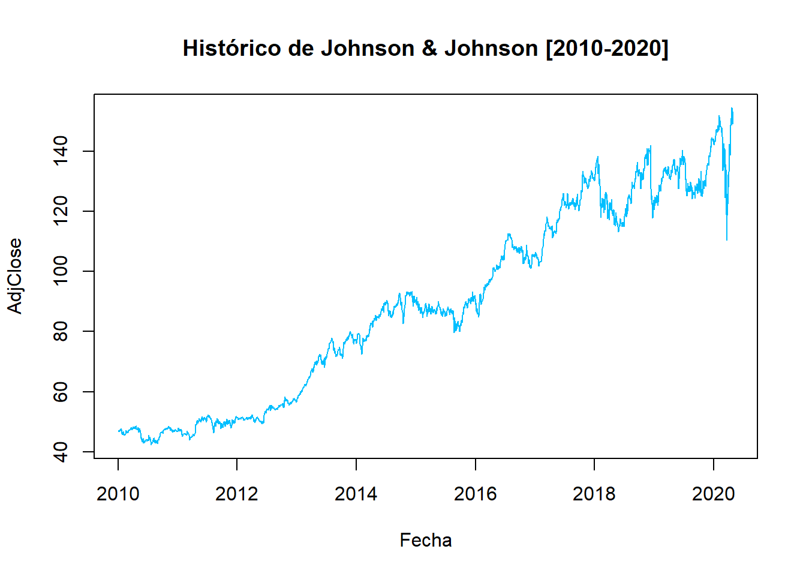
MA<- get.hist.quote(instrument = "MA",
start=as.Date("2010-01-04"),
end=as.Date("2020-04-30"), quote = "AdjClose")## time series ends 2020-04-29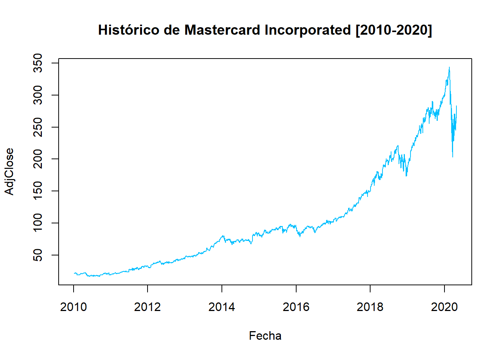
PEP<- get.hist.quote(instrument = "PEP",
start=as.Date("2010-01-04"),
end=as.Date("2020-04-30"), quote = "AdjClose")## time series ends 2020-04-29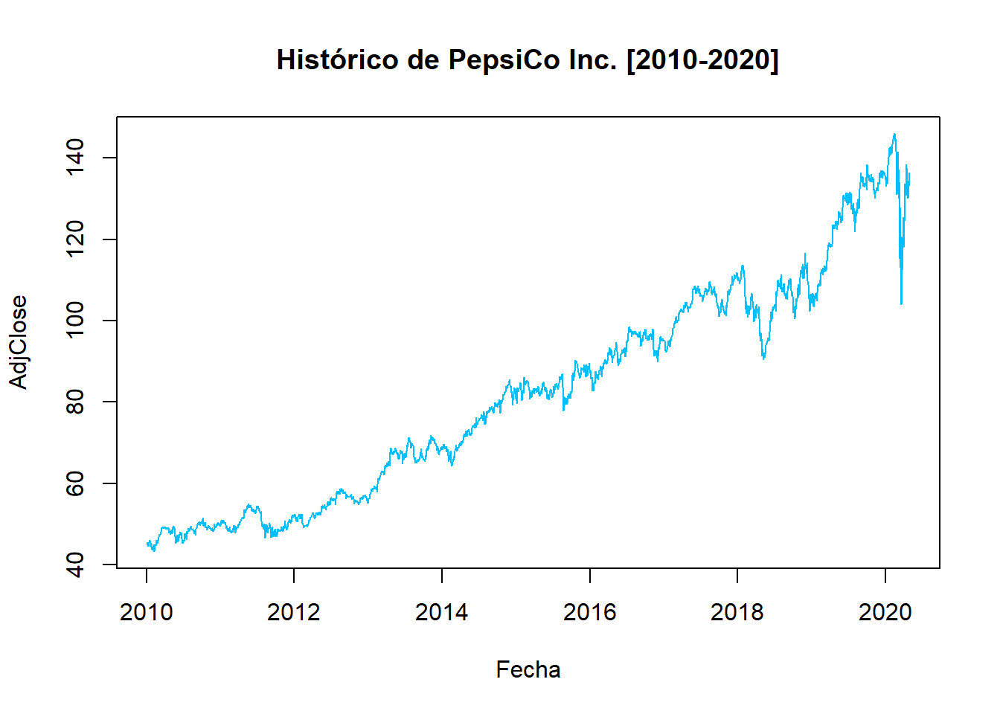
WMT<- get.hist.quote(instrument = "WMT",
start=as.Date("2010-01-04"),
end=as.Date("2020-04-30"), quote = "AdjClose")## time series ends 2020-04-29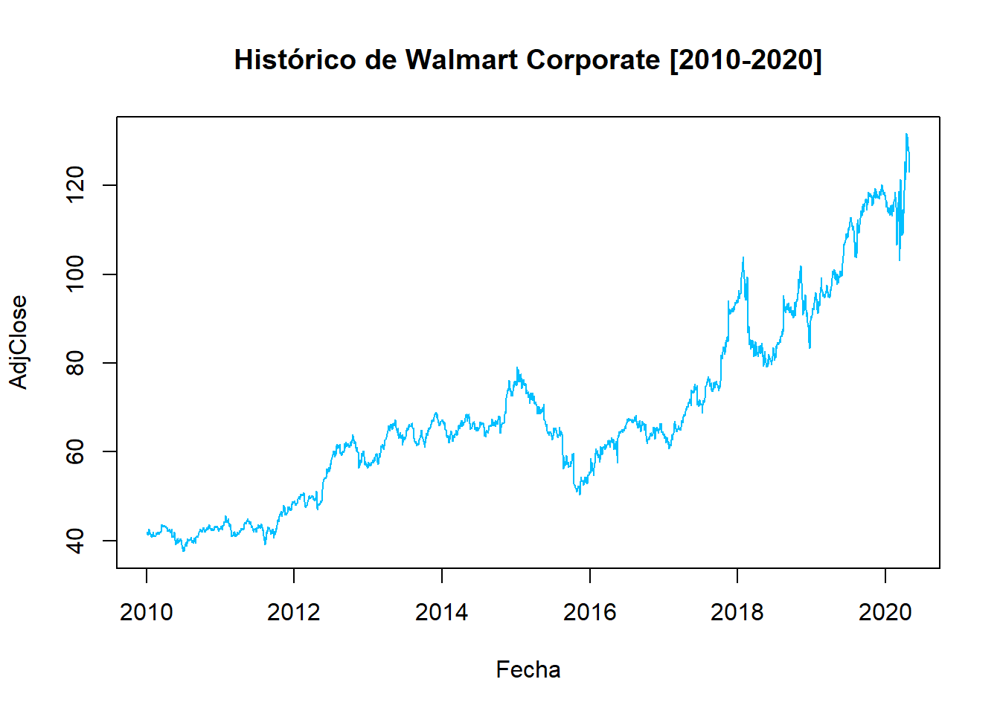
MCD<- get.hist.quote(instrument = "MCD",
start=as.Date("2010-01-04"),
end=as.Date("2020-04-30"), quote = "AdjClose")## time series ends 2020-04-29Se construye la cartera con los activos seleccionados:
## [1] "Adjusted.MSFT" "Adjusted.JNJ" "Adjusted.MA"
## [4] "Adjusted.PEP" "Adjusted.WMT" "Adjusted.MCD"names(CarteraInv)<-c("MSFT","JNJ","MA", "PEP", "WMT","MCD")
plot(CarteraInv, main=" ", col="deepskyblue", xlab="Fecha")
title(main="Histórico de Cartera")Se observan en conjunto los históricos de las series temporales y se aprecia el comportamiento creciente en cada uno de ellos con algunos períodos de desaceleración. Por último, la perturbación al final del primer trimestre del 2020 impulsado por la alarma de pandemia del Covid-19.
9. Rentabilidad logarítmica
Uno de los supuestos del modelo es que los retornos (rentabilidades) tienen el comportamiento de una distribución normal. La rentabilidad logarítmica permite su uso en probabilidades que se basan en este tipo de distribución con la restricción de que los valores no pueden ser inferiores a (-1).
## Adjusted
## 2010-01-05 0.0031108326
## 2010-01-06 0.0005453718
## 2010-01-07 0.0039932177
## 2010-01-08 0.0028775830
## 2010-01-11 0.0017452316
## 2010-01-12 -0.0094254458
## 2010-01-13 0.0082914563
## 2010-01-14 0.0024234862
## 2010-01-15 -0.0108821266
## 2010-01-19 0.0124221511plot(RetornoIndice, main=" ", col="deepskyblue", xlab="Fecha", ylab="Rendimientos")
title(main="Rendimientos del Indice S&P 500")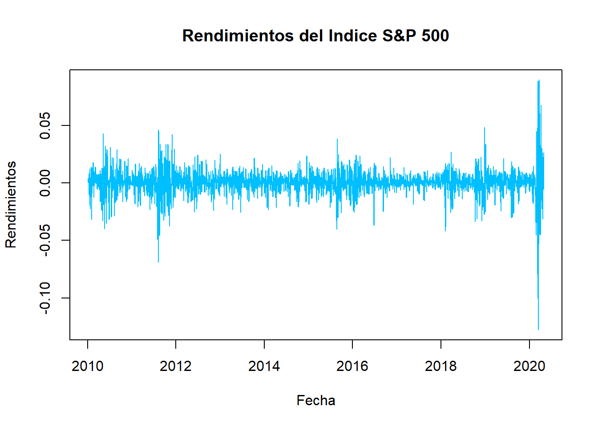
## MSFT JNJ MA
## 2010-01-05 0.0003229773 -0.0116630454 -0.0029631990
## 2010-01-06 -0.0061560136 0.0081009224 0.0038419676
## 2010-01-07 -0.0104541103 -0.0071626468 -0.0065559169
## 2010-01-08 0.0068731802 0.0034318714 0.0003544174
## 2010-01-11 -0.0128017337 0.0001557476 -0.0165952875
## 2010-01-12 -0.0066292077 0.0052802313 -0.0005601435
## 2010-01-13 0.0092685167 0.0063307684 0.0256630528
## 2010-01-14 0.0198993684 0.0019988538 0.0167630328
## 2010-01-15 -0.0032352631 -0.0083296223 0.0082960661
## 2010-01-19 0.0077472173 0.0121626041 0.0079639043
## PEP WMT MCD
## 2010-01-05 0.0120108978 -0.0100074536 -0.0076748158
## 2010-01-06 -0.0100534060 -0.0022377085 -0.0137381667
## 2010-01-07 -0.0063761433 0.0005599993 0.0072965412
## 2010-01-08 -0.0032856544 -0.0050499611 -0.0009696502
## 2010-01-11 -0.0011525859 0.0163661634 0.0077319522
## 2010-01-12 0.0139061996 0.0095466441 0.0054409889
## 2010-01-13 0.0080907160 0.0051030422 -0.0011177667
## 2010-01-14 0.0120144503 -0.0146496863 0.0009579268
## 2010-01-15 -0.0081539866 -0.0098251008 -0.0059232680
## 2010-01-19 0.0006417164 0.0064990337 0.0190846895plot(Rendimientos, main=" ", col="deepskyblue", xlab="Fecha")
title(main="Rendimientos de la Cartera")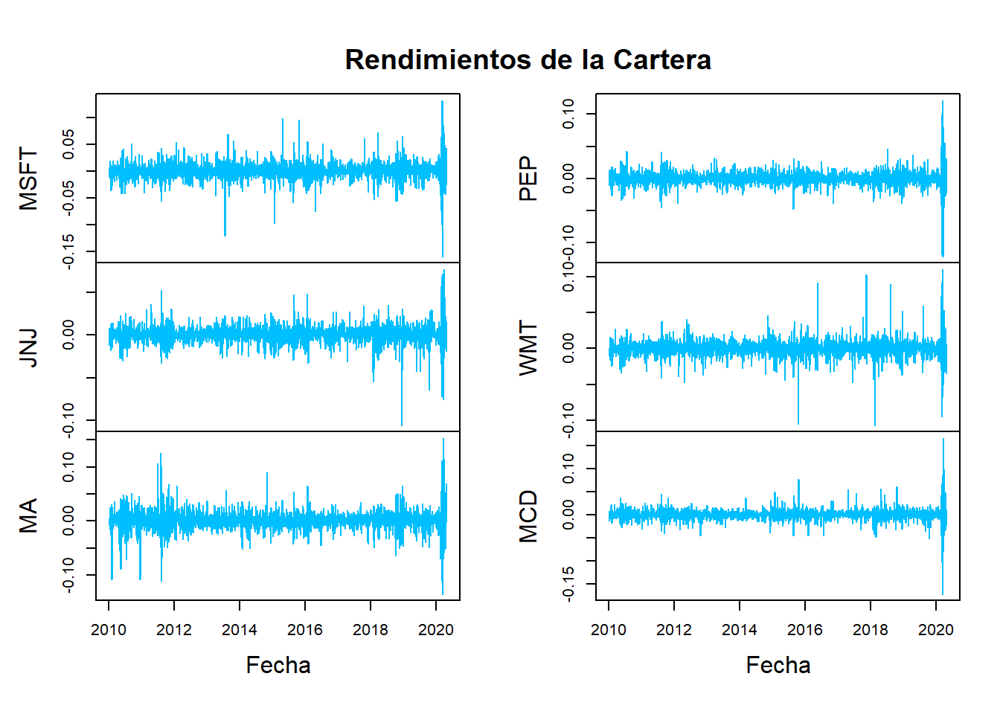
## Index MSFT JNJ
## Min. :2010-01-05 Min. :-0.1594534 Min. :-0.1057812
## 1st Qu.:2012-08-01 1st Qu.:-0.0067681 1st Qu.:-0.0040714
## Median :2015-03-04 Median : 0.0006323 Median : 0.0003368
## Mean :2015-03-02 Mean : 0.0007656 Mean : 0.0004430
## 3rd Qu.:2017-09-28 3rd Qu.: 0.0084151 3rd Qu.: 0.0056512
## Max. :2020-04-29 Max. : 0.1329289 Max. : 0.0769400
## MA PEP WMT
## Min. :-0.1361114 Min. :-0.1213581 Min. :-0.1073986
## 1st Qu.:-0.0066711 1st Qu.:-0.0045814 1st Qu.:-0.0049795
## Median : 0.0016620 Median : 0.0004190 Median : 0.0006589
## Mean : 0.0009901 Mean : 0.0004188 Mean : 0.0004145
## 3rd Qu.: 0.0087801 3rd Qu.: 0.0055736 3rd Qu.: 0.0060279
## Max. : 0.1536727 Max. : 0.1216564 Max. : 0.1107227
## MCD
## Min. :-0.1728706
## 1st Qu.:-0.0045674
## Median : 0.0008317
## Mean : 0.0005425
## 3rd Qu.: 0.0058528
## Max. : 0.166576910. Rendimientos esperados (medios) y volatilidades:
RendimientoPromedio = c(mean(RetornoIndice),mean(Rendimientos$MSFT),mean(Rendimientos$JNJ),mean(Rendimientos$MA),mean(Rendimientos$PEP),mean(Rendimientos$WMT),mean(Rendimientos$MCD))
Volatilidad = c(sd(RetornoIndice),sd(Rendimientos$MSFT),sd(Rendimientos$JNJ),sd(Rendimientos$MA),sd(Rendimientos$PEP),sd(Rendimientos$WMT),sd(Rendimientos$MCD))
Cuadro = data.frame (rbind(RendimientoPromedio,Volatilidad))
colnames(Cuadro)<- c("GSPC","MSFT", "JNJ", "MA", "PEP", "WMT", "MCD")
Cuadro*100 ## GSPC MSFT JNJ MA
## RendimientoPromedio 0.03671093 0.07656263 0.04429897 0.09900582
## Volatilidad 1.09810127 1.58191835 1.07033231 1.75847819
## PEP WMT MCD
## RendimientoPromedio 0.04187942 0.04144703 0.05424796
## Volatilidad 1.10295077 1.18539619 1.20532144Rendimiento promedio esperado:
El rendimiento promedio esperado diario del mercado está representado por el Índice S&P 500, en este caso es del 0,036%, un valor por debajo del rendimiento medio diario individual de todos los demás activos que componen la cartera.
El activo de mayor rendimiento viene dado por las acciones de Marter Card (MA) con un rendimiento promedio diario esperado de 0,099%; le siguen los valores de Microsoft (MSFT ) con un 0,076%; en el tercer puesto se encuentra el instrumento de Mc Donalds (MCD) con un 0,054%. Y los últimos lugares son para Johnson & Johnson (JNJ) con 0,044%; PepsiCo Inc (PEP) con 0,041% y Walmart Corporate (WMT) 0,041%.
Volatilidad:
Observando la volatilidad representada por la desviación estándar del mercado es decir, del S&P 500 para el caso, se ubica en 1,09% el valor más bajo comparado con los activos seleccionados excepto el de Johnson & Johnson (JNJ).
El activo de menor volatilidad es el de Johnson & Johnson (JNJ) con el 1,07% diario; seguido por PepsiCo Inc (PEP) con el 1,10%; el tercer lugar es para el instrumento de Walmart Corporate (WMT) 1,18%.
Los más volátiles serían, en primer lugar Marter Card (MA) con 1,75% que a su vez, es el de mayor rendimiento diario; siguen Microsoft (MSFT ) y Walmart Corporate (WMT) con 1,58% y 1,18% respectivamente.
Luego viene los cálculos de las matrices de covarianzas y correlaciones, para finalizar con un mapa de calor.
## Adjusted
## Adjusted 0.01205826## [1] 0.02502466## [1] 0.01145611## [1] 0.03092246## [1] 0.012165## [1] 0.01405164## [1] 0.014528## MSFT JNJ MA PEP WMT
## MSFT 0.025024657 0.008163749 0.015953543 0.008694497 0.007211608
## JNJ 0.008163749 0.011456113 0.008921192 0.006832574 0.005467158
## MA 0.015953543 0.008921192 0.030922455 0.008902346 0.006811006
## PEP 0.008694497 0.006832574 0.008902346 0.012165004 0.006386393
## WMT 0.007211608 0.005467158 0.006811006 0.006386393 0.014051641
## MCD 0.009283554 0.005950497 0.010680554 0.006640452 0.005065015
## MCD
## MSFT 0.009283554
## JNJ 0.005950497
## MA 0.010680554
## PEP 0.006640452
## WMT 0.005065015
## MCD 0.014527998Matriz de Varianza - Covarianza
La varianza es una medida de la variabilidad o propagación en un conjunto de datos. Matemáticamente, es la desviación estándar cuadrática del puntaje promedio.La covarianza es una medida en que los elementos correspondientes de dos conjuntos de datos ordenados se mueven en la misma dirección.
En la matriz, los valores que se encuentra diagonal, son los valores de la varianza, y los que están por fuera de la diagonal la covarianza.
La varianza representa el riesgo individual de cada una de las acciones seleccionadas. Según la varianza, el activo de mayor riesgo son los instrumentos de Mastercard Incorporated (MA) con el 0,030%; y el de mínima varianza Johnson & Johnson (JNJ) con un 0,011%. La varianza de mercado medida a través del S&P 500 es de 0,012%. lo que quiere decir que las acciones de Johnson & Johnson (JNJ) tienen un riesgo individual menor al riesgo de mercado.
La covarianza mide como cada par de variables se alejan de su media en un momento dado. Valores positivos indican que se mueven en la misma dirección y los valores negativos que se comportan de manera inversa.
Los valores bajos de la matriz indican que las variables se alejan moderadamente de su media y en la misma dirección. La covarianza es uno de los estadísticos usados para medir el riesgo de una cartera.
## MSFT JNJ MA PEP WMT MCD
## MSFT 100.00000 48.21553 57.35035 49.83154 38.45781 48.68860
## JNJ 48.21553 100.00000 47.39879 57.87747 43.09029 46.12451
## MA 57.35035 47.39879 100.00000 45.89986 32.67464 50.39111
## PEP 49.83154 57.87747 45.89986 100.00000 48.84678 49.95036
## WMT 38.45781 43.09029 32.67464 48.84678 100.00000 35.44984
## MCD 48.68860 46.12451 50.39111 49.95036 35.44984 100.00000Coeficiente de Correlación
La correlación simple, es usada como estadística en las industrias financieras y de inversión, para medir el grado en que dos valores se mueven en relación entre sí. Las correlaciones se utilizan en la gestión avanzada de cartera , calculada como el coeficiente de correlación , que tiene un valor que debe estar entre -1.0 y +1.0.
- La correlación mide el grado en que dos variables se mueven en relación entre sí.
- En finanzas, la correlación puede medir el movimiento de una acción con el de un índice de referencia, como el Beta.
- La correlación mide la asociación, pero no muestra si “X” causa “Y” o viceversa, o si la asociación es causada por un tercer factor, quizás invisible. Es decir, correlación no implica causalidad.
En la teoría de Markowitz la diversificación de los diferentes activos que se incluirán en la cartera, implica que se seleccionen aquellos con una correlación cercana a cero (0) o negativa. Una forma sencilla de hacerlo es tomar activos de empresas que pertenezcan a sectores económicos distintos, lo que implica que una crisis en alguno de ellos, no afecte el valor de las acciones de empresas de los otros sectores.
En la cartera seleccionada todas las correlaciones son positivas, lo que implica que se mueven en la misma dirección. La correlación más baja se encuentran en las acciones de Mastercard Incorporated (MA) y Walmart Corporate (WMT) con un 32,6%; y las más altas entre Microsotf Corporation (MSFT) y Mastercard Incorporated (MA) con 57,35%; además de Johnson & Johnson (JNJ) y PepsiCo Inc (PEP) con 57,88%.
Para finalizar, se agregará un mapa de calor de correlaciones “HeatMap”, el objetivo está en “rojo” y muestra las acciones con las correlaciones más bajas, mientras que el amarillo las correlaciones altas.
library(gplots)
generate_heat_map <- function(correlationMatrix, title)
{
heatmap.2(x = correlationMatrix,
cellnote = correlationMatrix,
main = title,
symm = TRUE,
dendrogram="none",
Rowv = FALSE,
trace="none",
density.info="none",
notecol="black")
}
corr1 <- round(cor(Rendimientos) * 100, 2)
generate_heat_map(corr1,"Mapa de calor: Correlaciones")11. Modelo de Markowitz
El conjunto eficiente de Markowitz es una cartera con rendimientos que se maximizan para un determinado nivel de riesgo en función de la construcción de la cartera de varianza media .
Tasa Libre de Riesgo
La tasa libre de riesgo representa el interés que un inversionista esperaría de una inversión absolutamente libre de riesgo durante un período de tiempo específico. La tasa real libre de riesgo puede calcularse restando la tasa de inflación actual del rendimiento del bono del Tesoro que coincida con la duración de su inversión.
Restricciones
Solo posición en largo.markov<-portfolioSpec()
setRiskFreeRate(markov)<- -0.001 #Tasa libre de riesgo
setNFrontierPoints(markov) <- 20 #Cantidad de carteras en frontera##
## Title:
## MV Portfolio Frontier
## Estimator: covEstimator
## Solver: solveRquadprog
## Optimize: minRisk
## Constraints: LongOnly
## Portfolio Points: 5 of 20
##
## Portfolio Weights:
## MSFT JNJ MA PEP WMT MCD
## 1 0.0000 0.0000 0.0000 0.0000 1.0000 0.0000
## 5 0.0577 0.2597 0.1101 0.1198 0.2213 0.2313
## 10 0.1565 0.1455 0.3245 0.0000 0.1643 0.2092
## 15 0.2481 0.0000 0.5533 0.0000 0.0537 0.1449
## 20 0.0000 0.0000 1.0000 0.0000 0.0000 0.0000
##
## Covariance Risk Budgets:
## MSFT JNJ MA PEP WMT MCD
## 1 0.0000 0.0000 0.0000 0.0000 1.0000 0.0000
## 5 0.0687 0.2397 0.1516 0.1082 0.1991 0.2327
## 10 0.1736 0.0961 0.4612 0.0000 0.1020 0.1671
## 15 0.2214 0.0000 0.6768 0.0000 0.0202 0.0817
## 20 0.0000 0.0000 1.0000 0.0000 0.0000 0.0000
##
## Target Returns and Risks:
## mean Cov CVaR VaR
## 1 0.0004 0.0119 0.0273 0.0166
## 5 0.0005 0.0092 0.0213 0.0124
## 10 0.0007 0.0110 0.0258 0.0159
## 15 0.0008 0.0137 0.0324 0.0200
## 20 0.0010 0.0176 0.0411 0.0263
##
## Description:
## Mon Jun 01 18:22:11 2020 by user: PersonalfrontierPlot(Frontera)
grid()
tangencyPoints(Frontera, pch = 19, col = "red", cex=2)
tangencyLines(Frontera, col="grey", pch=19, cex=2)
minvariancePoints(Frontera, col="blue", pch=19, cex=2)
monteCarloPoints(Frontera, mCsteps=2000, col="#0098D5", cex=0.001)Frontera Eficiente
En el gráfico de las fronteras eficientes se realizaron 2000 simulaciones MonteCarlo que son los pequeños puntos azules diseminados en el área, cada uno representa una cartera de rendimiento para un determinando nivel de riesgo.
En la frontera se encuentran veinte (20) círculos pequeños de color blanco, los que tienen el borde de color negro son los portafolios eficientes. El círculo rojo es el portafolio tangente y el círculo azul el portafolio con la mínima varianza global.
Pesos de los portafolios
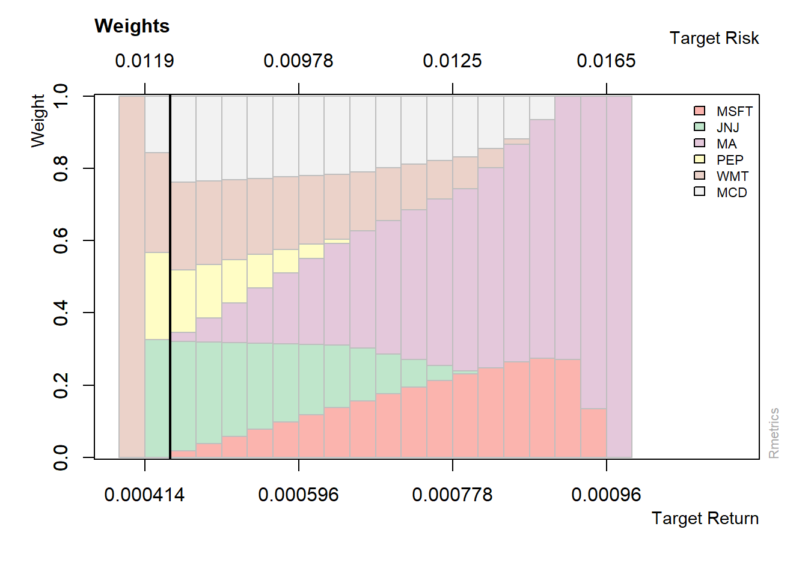
##
## Title:
## MV Efficient Portfolio
## Estimator: covEstimator
## Solver: solveRquadprog
## Optimize: minRisk
## Constraints: LongOnly
##
## Portfolio Weights:
## MSFT JNJ MA PEP WMT MCD
## 0.0000 0.3190 0.0000 0.2038 0.2559 0.2213
##
## Covariance Risk Budgets:
## MSFT JNJ MA PEP WMT MCD
## 0.0000 0.3190 0.0000 0.2038 0.2559 0.2213
##
## Target Returns and Risks:
## mean Cov CVaR VaR
## 0.0005 0.0088 0.0200 0.0121
##
## Description:
## Mon Jun 01 18:22:31 2020 by user: PersonalPortafolio Tangente
El portafolio tangente se elabora a partir del índice o razón de Sharpe, el cual calcula el exceso de rentabilidad sobre la tasa de interés libre de riesgo logrado por el portafolio por unidad de volatilidad o riesgo propio del portafolio. El ratio de Sharpe muestra la rentabilidad ajustada por la tasa libre de riesgo y el riesgo de la covarianza.
##
## Title:
## MV Tangency Portfolio
## Estimator: covEstimator
## Solver: solveRquadprog
## Optimize: minRisk
## Constraints: LongOnly
##
## Portfolio Weights:
## MSFT JNJ MA PEP WMT MCD
## 0.0409 0.2778 0.0741 0.1425 0.2302 0.2345
##
## Covariance Risk Budgets:
## MSFT JNJ MA PEP WMT MCD
## 0.0478 0.2655 0.0977 0.1339 0.2156 0.2395
##
## Target Returns and Risks:
## mean Cov CVaR VaR
## 0.0005 0.0090 0.0208 0.0123
##
## Description:
## Mon Jun 01 18:22:32 2020 by user: Personal12. Participación por portafolio:
Composición del Portafolio Eficiente
- Johnson & Johnson (JNJ): 31,9%
- PepsiCo Inc (PEP): 20,4%
- Walmart Corporate (WMT): 25,6%
- McDonald’s Corporation (MCD): 22,1%
Composición del Portafolio Tangente
- Microsotf Corporation (MSFT):4,1%
- Johnson & Johnson (JNJ): 27,8%
- Mastercard Incorporated (MA): 7,4%
- PepsiCo Inc (PEP): 14,2%
- Walmart Corporate (WMT): 23%
- McDonald’s Corporation (MCD): 23,4%
weightsPie(efPortfolio, col=col )
mtext(text = "Portafolio eficiente", side = 3, line = 1.5,
font = 2, cex = 0.7, adj = 0)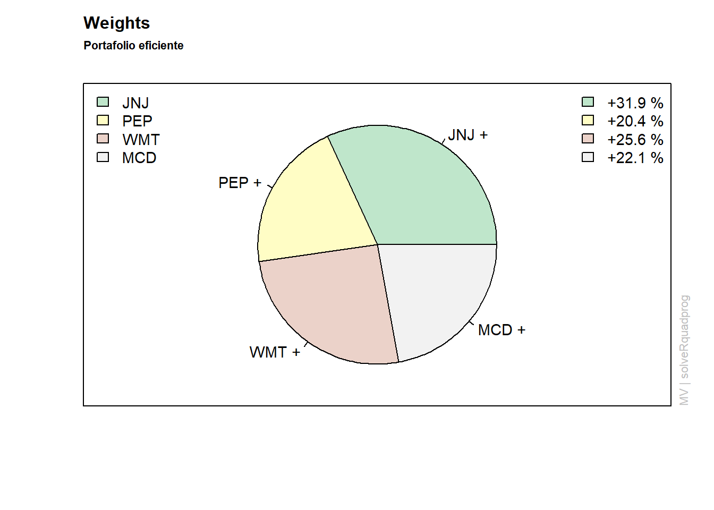
weightsPie(tgPortfolio, col=col)
mtext(text = "Portafolio tangente", side = 3, line = 1.5,
font = 2, cex = 0.7, adj = 0)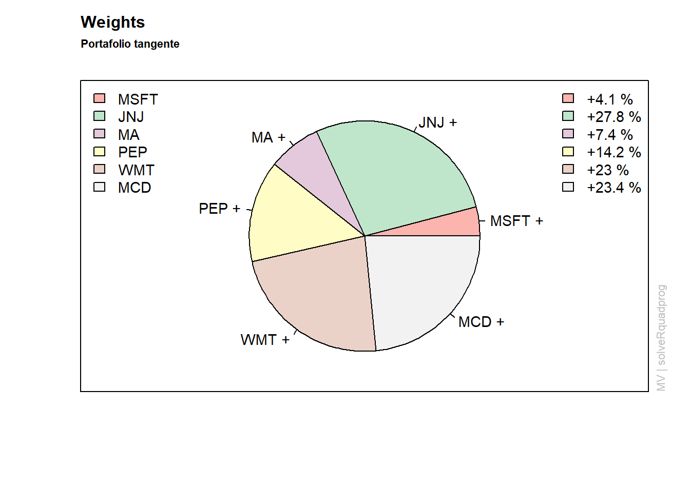
Puedes compartir este material:
Por:
Jesús Benjamín Zerpa
Economista
JesusZerpaEconomia@Gmail.Com
 Excepto donde se indique lo contrario, el contenido de esta obra está bajo una licencia de Creative Commons Reconocimiento 4.0 Internacional.
Excepto donde se indique lo contrario, el contenido de esta obra está bajo una licencia de Creative Commons Reconocimiento 4.0 Internacional.Consultas sobre la colaboración a la comunidad Rcran: Artículo original en Rpubs
Nicolás
UNIVERSIDAD DE CHILE / INGENIERÍA COMERCIAL
Hola Jesús, cómo estás? Soy Nicolás, estudiante de la Universidad de Chile y resulta que tu contenido de Optimización de Portafolio en Rpubs me ha sido de muchísima ayuda para realizar una tarea de finanzas pero tengo una duda y quería saber si me puedes ayudar. Saludos!
Jasbleidy
UNIVERSIDAD CENTRAL DE VENEZUELA / ESTADÍSTICA
Jesús encontré tu correo en el blog de RPubs y quisiera saber si haces asesorías académicas? Estaría interesada, ya que estoy realizando un trabajo referente a trading algorítmico y necesito apoyo con la parte de R Studio.
| FINANCE | INTELLIGENCE BUSSINES | FORECASTING | TIME SERIES | FINANCIAL DASHBOARD | FINANCIAL BUDGET | SPATIAL ECONOMETRICS |
| FINANCE | INTELLIGENCE BUSSINES | FORECASTING | TIME SERIES | FINANCIAL DASHBOARD | FINANCIAL BUDGET | SPATIAL ECONOMETRICS |